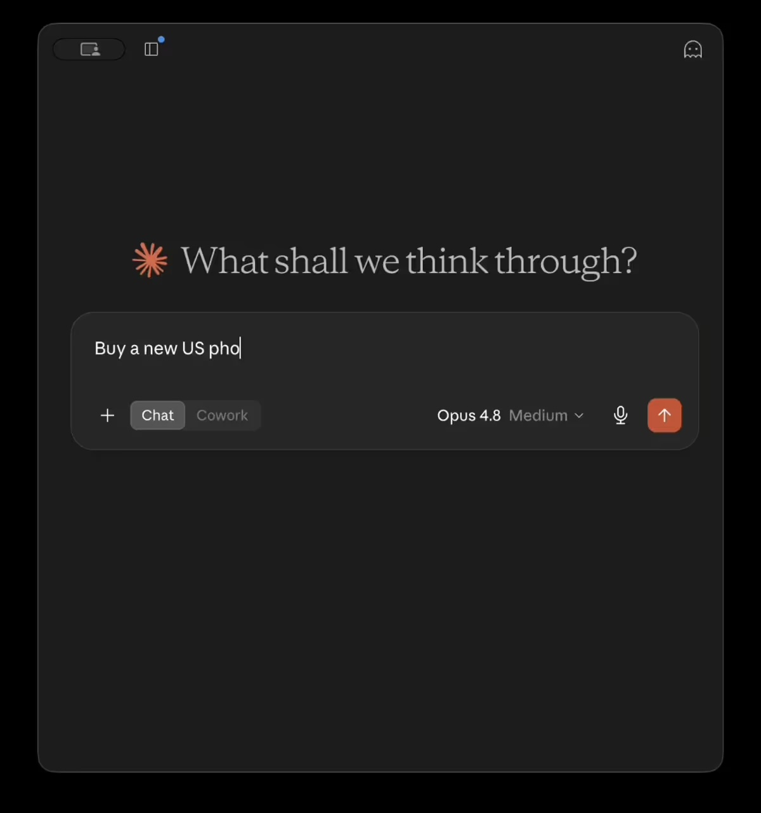

Facebook｜Zernio：替 AI Voice Agent 快速配置電話號碼與 WebSocket 轉接
來源是 Zernio - previously Late 的 Facebook 公開貼文。貼文主張：AI agent 已經能說話，下一步是給它一個電話號碼；透過 API 購買號碼、設定 `wss://` forwarding，約 30 秒可接第一通電話；可搭配 Vapi、Retell、xAI 或自訂 agent，支援 54 個國家，價格從 €2/月起。

Facebook 可見內容
公開頁面可見貼文作者為「Zernio - previously Late」，帳號顯示已驗證。貼文時間顯示為 7 月 17 日上午 7:12。貼文原文：
> Your AI agent can speak. Now give it a phone number. Buy a number via API → configure wss:// forwarding → first call in 30 seconds. Works with Vapi, Retell, xAI, or any custom agent. Numbers in 54 countries. From €2/mo.
貼文卡片導向 `go.zernio.com`，預覽文字為：
> Phone Numbers for AI Agents — Buy a number. Route to your agent. Done.
可見互動數據為約 78 個讚與 5 次分享；留言內容未公開展開。
連結頁重點
點入卡片後導向 Zernio 的 AI Calling landing page：`https://go.zernio.com/ai-calling/`。頁面標題為「AI Voice Agent API — Phone Numbers + Call Routing | Zernio」，主標是「Your AI Agent Needs a Phone Number」，副標是「Buy a phone number. Route calls to your AI agent. Done.」
頁面宣稱的能力包括：
- 54 國 PSTN 電話號碼。
- 將電話路由到任何 WebSocket-compatible voice agent。
- 相容 Vapi、Retell AI、xAI、Deepgram、ElevenLabs 或自訂 `wss://` agent。
- 支援 inbound + outbound、通話錄音、Deepgram 轉錄、語音信箱、Business Hours / IVR、blocklist 與合規流程。
- 同一組 Zernio API key 也延伸到 SMS / MMS、社群發布、廣告 Campaign API 與分析。
- 頁面 metadata 標示 `noindex, nofollow`，因此這比較像投放或社群導流 landing page，不一定是可長期索引的正式產品文件頁。
圖片 / 封面 OCR
封面圖是 Zernio landing page 的 demo 縮圖，畫面為深色 AI 對話框介面。可見大字「What shall we think through?」，輸入框中正在輸入「Buy a new US pho...」，下方有 Chat / Cowork 切換、模型標籤「Opus 4.8 Medium」、麥克風圖示與橘色送出按鈕。這張圖的視覺訊息是：使用者可用 AI 對話方式要求購買美國電話號碼，作為 voice agent 電話接入的入口。
官方 / 可靠來源查核
Zernio 自家網站與 blog 顯示其定位是 social media / messaging API for developers and AI agents，並在 WhatsApp Calling API 文章中描述可把語音通話轉到 phone line、SIP 或 AI voice agent。這支持 Zernio 具備「通訊 API / voice routing」方向的產品敘事，但 landing page 的「30 秒第一通電話」「54 國」「€2/mo」「SOC 2 / GDPR」等數字仍屬 Zernio 自家宣稱，需以實際帳戶、地區與合約條款驗證。
Vapi 官方文件說明 Vapi 可建立能撥打與接聽電話的 voice AI agents，並提供 WebSocket Transport，讓音訊以 WebSocket 進行即時雙向串流。這支持「WebSocket-compatible voice AI」作為 voice agent 接入方式之一。
Retell AI 官方介紹說明 Retell 是用於 build、test、deploy、monitor AI phone agents 的平台，支援 inbound / outbound、telephony、tools 與 analytics。這支持貼文中「與 Retell 類 voice agent 平台相容」的產品方向，但實際串接方式仍需看 Zernio 的 forwardTo / SIP / WebSocket 規格。
xAI 官方 Voice Agent / SIP 文件指出 SIP 可把 PSTN、contact-center 或 PBX 通話路由進 Voice Agent API session。這支持貼文把 xAI 放在 voice-agent 通話整合名單中的背景，但 Zernio 與 xAI 的一鍵整合程度未在公開頁面提供技術細節。
Twilio Media Streams 官方文件則是重要對照：Twilio 早已支援用 WebSocket 即時收送電話音訊串流。這代表「電話號碼 + WebSocket media stream + AI agent」是成熟的技術架構；Zernio 的差異化主張在於把號碼購買、路由、錄音、轉錄、語音信箱、合規與多平台 API 包裝為更接近 AI agent developer 的單一層。
實務判讀
這則貼文值得歸檔，因為它呈現 voice AI 基礎設施的新一波包裝方式：不再只賣「電話 API」，而是直接對 AI agent 開發者承諾「給你的 agent 一個電話號碼」。這對需要客服、預約、銷售、回訪、門市 OMO 或語音表單的 AI agent 場景很有參考價值。
但採用前應分開看三件事：
- 電話號碼與通話路由：號碼覆蓋國家、月租、撥打費率、號碼攜碼、地區法規與緊急服務限制。
- Voice agent media layer：是 WebSocket、SIP、Twilio-style stream，還是平台專用 connector；音訊格式、延遲、斷線重試與 tool call 回傳都會影響實際體驗。
- 合規與資料治理：通話錄音同意、10DLC、DNC、GDPR、SOC 2、資料保存位置、轉錄供應商與 webhook 安全性，都需要實際文件或合約確認。
補充邊界
- Facebook 貼文只公開短文、卡片與基本互動數字；無法從公開頁面驗證實際 demo、價格結帳流程或後台操作是否如文案所述。
- Zernio AI Calling landing page 設定為 `noindex, nofollow`，公開可見但可能是活動頁或投放頁；日後內容可能變動。
- 本文未登入 Zernio、未購買號碼，也未進行實際通話測試；歸檔結論限於公開頁面與官方文件層級查核。
- 「Works with Vapi, Retell, xAI」應理解為可透過 WebSocket / SIP / voice agent API 之類介面串接的方向，不代表所有平台都有官方共同維護的一鍵整合。